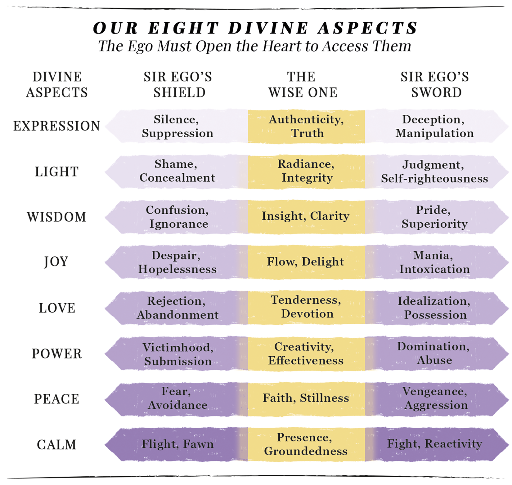

Kindred Lights
Kindred Lights
There is no Undo or Redo button for the craziness in your life. It is the fire that purifies you.

This page articulates the Eight Aspects — the heart of Beyond Blame & Shame: The Truth of Who You Are, a forthcoming book in the Hero’s Path of Love.
The teaching here is the working version. The book will hold this teaching in fuller form, with the journey through each aspect drawn out across nine chapters — one soul, walked through one crucible, for each of the eight exalted aspects of the Divine.
If you've been walking the path a while, you've already asked it. Maybe in a therapist's office. Maybe on a kitchen floor. Maybe at three a.m. after the latest round of whatever your particular version of this is.
Why did this happen? Why this family? Why this marriage? Why this body, this diagnosis, this addiction, this loss? Why — if the universe is benevolent, if there is any larger intelligence at work — why this specific set of crucibles?
This room is the answer Sir EgoYour ego. The hero with the wrong map. has been unable to hear, because Sir Ego is busy trying to figure out what went wrong, who to blame, and how to make sure it never happens again. The Wise OneYour higher self. Already home. has been holding the answer the whole time.
The crazy stuff wasn't a malfunction. It was the mechanism.
At the level where the shame cannot reach, you are made of eight qualities. Light. Peace. Calm. Wisdom. Love. Power. Joy. Expression. These are not achievements. They are substance. The same substance the Creator is, because you are made in that image.
But Sir Ego does not have access to them directly. He has access only through the Wise One — and when he forgets the Wise One is available, he reaches for each aspect with the tools he has: his shield and his sword. The shield is the aspect practiced in deficiency — collapsed, hidden, withdrawn. The sword is the aspect practiced in excess — forced, loud, weaponized. Both are Sir Ego's sincere attempts to produce the aspect on his own. Both produce the counterfeit.

Read across any row and you'll find yourself in one of three places. The shield (hiding, fleeing, collapsing). The sword (judging, fighting, dominating). Or the center — the Wise One's radiance, presence, faith, creativity, insight, flow, authenticity, warmth.
Sir Ego's entire life is a pendulum swing between the shield and the sword. When one fails, he switches to the other. When that fails, he switches back. The exhaustion you've been feeling is the pendulum itself. The Wise One has been standing at the center the whole time, waiting for Sir Ego to stop swinging and look up.
The sword and the shield are not the problem. They are sincere attempts by a courageous soul to produce the divine from human resources. The attempt was never going to work. The attempt is what brings you here.
Sir Ego lives in duality. Everything is sorted into two piles: what matches his script (good) and what doesn't (bad). When he practices any aspect, he can only reach for one of two counterfeits — the sword or the shield. If the shield hurts, he switches to the sword. If the sword hurts, he switches back. He is convinced the answer must be somewhere between the two extremes. It isn't. The middle he is searching for does not exist on his axis at all.
The Wise One lives on a different axis entirely — the Y-axis. Not the midpoint between sword and shield. A separate dimension the horizontal swinging cannot reach. Sir Ego cannot find it because it is not in the space he is searching. It appears only when the heart opens, the script is set aside, and the aspect is allowed to come through rather than be produced.
This is the crucial distinction. Sir Ego tries to be loving, powerful, wise, calm — from his own resources. The Wise One lets Love, Power, Wisdom, and Calm come through her from divine essence. The aspects come through you; they are not of you. In yogic teaching, these are the aspects of God, and because you are made in that image, they are eternally yours — not to be earned, but to be uncovered when the ego's script stops obstructing the channel.
In your eternal state, in unity with the Creator, you cannot experience rejection, abandonment, disempowerment, ignorance, hatred, or fear. These do not exist in your divine nature. So you came to the Earth Adventure Park to experience what your soul cannot experience anywhere else — the not-God themes. And you will bounce between the sword and the shield of each aspect you came to explore, until the Wise One's Y-axis is finally found, chosen, and lived. The bouncing is not failure. It is exactly the curriculum your soul agreed to walk.
The aspects come through you. They are not of you. The ego's job is to release the script that closes the channel. The Wise One's job is to let the divine flow through.
Consider Power. In Sir Ego's world, power is zero-sum — taken from someone, given by someone, defended against someone. When he has it, someone else lost it. When someone else has it, he lost it. That is the entire game. Divine Power is not this. Divine Power is the divine essence coming through you — as creativity, as inspiration, as intelligence, as the capacity to co-create reality with the Script of Creation itself. It cannot be taken. It cannot be given. It flows through the open channel. Same word. Completely different dimension. This same distinction applies to every one of the eight aspects.
Free will is what chooses, moment by moment, which one you focus on: the ego's counterfeit or the Wise One's Y-axis. We are all a blend of both. Every human being carries both the divine aspect and the duality distortion. The practice is not becoming a different person. The practice is choosing, one triggered moment at a time, to release the script and let the aspect come through.
What follows is the walk through each aspect — the two strategies Sir Ego's script tends to run when reaching for it, and the Wise One's expression on the Y-axis. As you read, you may find one aspect quietly recognizing itself. That's a good aspect to sit with for a while.
Radical transparency. Nothing hidden. Nothing performed.
Sir Ego’s script has two strategies for Light. One is the sword: making sure the version of him that the world sees is the version he can defend — the polished image, the carefully told story, the mask kept forward-facing. The other is the shield: staying small enough not to be truly seen at all, disappearing before he can be judged, moving through the world quietly. Both come from the same tender impulse — the wish to be safe from a world he believes might turn away if it saw all of him. Neither is chosen consciously. Both have been running for a long time.
The Wise One knows there is nothing to hide. The eternal self was made in the image of God. There is no truth about her that would turn the Creator away, because the Creator is what she is made of. When the heart opens and the script rests, what appears is not the curated self or the hidden self — it is the actual self, radiant, unadorned, and unafraid to be seen. Light is what happens when the managing is no longer needed.
Complete faith in the Script of Creation.
Sir Ego's script has two strategies for Peace. One is the sword: if everyone would just do the right thing, there would be peace — his rules, his sense of order, held with a certainty that feels like moral clarity. The other is the shield: keep the fragile calm at all costs, go along, do not disturb, quiet the voice before it can cause trouble. Both come from the same tender place — a longing for a world that feels safe, coherent, at rest. Neither strategy is chosen consciously. Both are what a good knight does when he believes peace depends on him.
The Wise One rests in the Script of Creation. She knows the design is holding, the karmariculum is unfolding, the highest good is being served whether Sir Ego can see how or not. Peace does not require the world to conform. Peace is what remains when the demand that the world conform quietly settles. She can walk through a custody battle, a diagnosis, a market crash, a child's crisis — and remain unshakeable — because her faith is in the intelligence running the whole thing, not in the specific outcome she was gripping.
Enduring equanimity. The still point the storm cannot reach.
Sir Ego's script has two strategies for Calm. One is the sword: stay wired, stay ready, scan for every threat — if he can just anticipate what might disturb the peace, he can prevent it in advance. The other is the shield: check out, tune out, ease off from a body that feels like too much — if the storm cannot be felt, it cannot reach him. Both come from the same tender place — a nervous system doing everything it knows to protect the soul it belongs to. Neither strategy is chosen. Both are what happens when a good knight is trying to hold the line without the resources he needs.
The Wise One has found the still point. Not by fighting the storm and not by fleeing it. By discovering something inside her the storm cannot reach — the eternal self, present, aware, undisturbed. The nervous system relearns, through the practice, that it can feel a trigger without acting on it. The energy can rise and pass through. The body can be trusted. Calm is not the absence of storms. Calm is the discovery of what is deeper than the storm.
Direct revelation. Embodied knowing that arrives through willingness to receive.
Sir Ego's script has two strategies for Wisdom. One is the sword: gather information, have the answer ready, know the field well enough to defend the position — being right feels like being safe. The other is the shield: I don't know, I can't be sure, someone else should decide — a quiet stepping back from knowing what she actually knows. Both come from the same tender place — a longing to be adequate to whatever life brings. Neither strategy is chosen. Both are what a good knight does when he has been given serious problems and no direct line to the intelligence that would solve them.
The Wise One receives. She does not manufacture wisdom from her stored inputs. She opens the channel and lets the Wise One's perspective walk in — the piece of the larger context Sir Ego could not see, arriving whole, arriving clear, arriving with the quiet certainty that this is what is needed now. Wisdom is not what has already been learned. Wisdom is what arrives when the receiver finally gets quiet enough to hear it.
Unconditional, impersonal love. Unity consciousness. No one left out.
Sir Ego's script has two strategies for Love. One is the sword: hold on tight, need deeply, merge with the other, make her the source of his worth — if he can just secure enough love, the ache will finally settle. The other is the shield: leave first, keep distance, protect the tender place before it can be reached — if he cannot be left, he cannot be broken. Both come from the same tender place — a heart that once believed love was scarce and precious and could be taken. Neither strategy is chosen. Both are what a good knight does when he does not yet know that Love is what he is made of.
The Wise One is in unity consciousness. Love is not something she is trying to get. It is what she is made of. She loves without possession, without need, without condition — because the love flows through her from the Divine, not from a scarce inner supply she is guarding. She can hold anyone, including the difficult ones, including the ones who hurt her, in the field of that love. No one is left out. Everyone is included in unity. This is the Love the soul means when it uses the word.
Sovereign co-creation. Divine essence flowing through as creativity, inspiration, intelligence, manifestation.
Sir Ego's script has two strategies for Power. One is the sword: take charge, be in command, defend the position with vigor — if he is not the one holding the levers, he is at the mercy of whoever is. The other is the shield: someone else has all the power, there is nothing to be done, the world is happening to him — a quiet stepping out of the game he does not believe he can win. Both come from the same tender place — a soul who does not yet know that Power is not a scarce resource to be taken or given, and is trying to survive inside a game where he believes it is. Neither strategy is chosen. Both are what a good knight does when he thinks the game is zero-sum.
The Wise One knows Power is not zero-sum. Divine Power is the essence itself flowing through the open channel — as the capacity to create, to inspire, to manifest reality in alignment with the Script of Creation. It cannot be taken from anyone because it is not stored in the personal self. It cannot be given away because it is not owned. It flows. The Wise One's Power is limitless because its source is limitless. She is not fighting anyone for it. She is receiving it, and letting it move through her into the world.
Ever-new bliss without external cause. The natural state of the aligned soul.
Sir Ego's script has two strategies for Joy. One is the sword: keep the mood up, keep the smile forward, focus on the bright side, chase the next moment of stimulation — if he can just generate enough sparkle, maybe the low tide will not return. The other is the shield: settle into gray, expect little, accept that this is how life is — a quiet giving up on the possibility of the joy he can vaguely remember. Both come from the same tender place — a soul who has felt the real thing before and does not know how to make it stay. Neither strategy is chosen. Both are what a good knight does when joy has felt like something that must be caught, held, defended, or grieved.
The Wise One knows Joy is uncovered, not produced. It is the natural state of the aligned soul — the river's joy at being the river. When the obstruction clears, what has always been underneath surfaces. Joy is not a mood to sustain. It is not a mountaintop to climb. It is what remains when the ego's counterfeit versions of happiness are set down and the actual current is allowed to move through. She can laugh while doing sacred work. That laughter is the confirmation.
Vibrational alignment with AUM. Authentic voice, radiant health, the tuning fork.
Sir Ego's script has two strategies for Expression. One is the sword: build the persona, tell the story well, make sure to be seen — if he can just be witnessed enough, something inside will finally settle. The other is the shield: hold the voice back, keep the true thoughts private, stay small enough not to be caught out in a wrong opinion. Both come from the same tender place — a soul who has felt what it is to be misheard or dismissed and is doing what she can to prevent it happening again. Neither strategy is chosen. Both are what a good knight does when he has come to believe that expression is either performance or risk.
The Wise One expresses as vibrational alignment. Expression is not what she says or produces. It is the authentic frequency of who she is when every other aspect is operating — aligned with the Script of Creation, the larger pattern of which her particular life is one note. It travels through whatever instrument the soul came with. The painter's brushstroke. The judge's ruling. The parent's bedtime. The way she stands in line at the post office. When all eight aspects are operating, she is a tuning fork. The vibration is what carries.
If one aspect quietly recognized itself as you read, that is the aspect your karmariculum has been forging. It doesn't need to be fixed. It only asks to be seen.
This room is the overview — the architecture and the walk. The book is the deeper passage — one chapter per aspect, the full teaching on how each one is forged, the specific patterns Sir Ego runs when he’s trying to produce it on his own, and the Wise One’s way of letting the aspect emerge as what you already are.
Beyond Blame and Shame is forthcoming in the Hero’s Path of Love series.